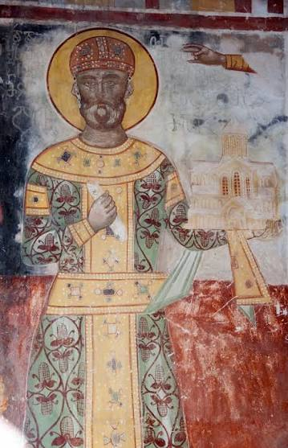

ეკლესიაში განხორციელებული დიდი გარდაქმნების შემდეგ მეფემ დაიწყო ცენტრალური ადმინისტრაციის რეფორმირება. მან სამეფო კარზე შექმნა პირველი ვაზირის ინსტიტუტი.
p>დავითი გამეფებიდანვე დიდ ყურადღებას უთმობდა ლაშქრის რეორგანიზაციის საკითხს. მან თავიდანვე ჩაუყარა საფუძველი ერთგულ მოლაშქრეთა რაზმს, რომელიც შემდეგ პირად გვარდიად "მონასპად" იქცასწორედ სამხედრო რეფორმის გამო, XII საუკუნის დასაწყისში საქართველოს უკვე ჰქონდა მრავალრიცხვიანი, ორგანიზებული არმია. მაგრამ დავითი გადამწყეტი ბრძოლისთვის ემზადებოდა, დაუკავშირდა ყივჩაყებს და მოიწვია ისინი. 1118-1119 წლებში დავითმა ყივჩაღები ჩამოასახლა საქართველოში. მეფემ მათგან 40 ათასი რჩეული მეომარი მიიღო, დაყო რაზმებად და დაუნიშნა სარდლები. ამასთან, უზრუნველყო ისინი საჭირო აღჭურვილობით.

1110 წელს სამხედრო ხერხის გამოყენებით ქართველებმა ქვემო ქართლის ყველაზე სტრატეგიული ციხე-სამშვილდე-აიღეს, 1115 წელს კი-რუსთავი. 1117-1118 წლებში დავით IV-ის ძალაუფლების ქვეშ მოექცა მნიშვნელოვანი ციხესიმაგრეები-ლორე, გიში. დავით აღმაშენებლის ბრძოლამ თურქ-სელჩუკთა ბატონობა შეარყია მთელ სამხრეთ კავკასიაში. დავითის სამხედრო კამპანიამ სასტიკად შეაშფოთა სამხრეთ კავკასიის მუსლიმი ამირები, ვაჭრები, სასულიერო წოდების წარმომადგენლები. საქართველოს წინააღმდეგ ბრძოლის ორგანიზება სამმა ქალაქმა, თბილისმა, განძამ, და დმანისმა იკისრა. მათ შველა წინა აზიის მმართველებს სთხოვეს. საქართველოს წინააღმდეგ შეიკრიბა საკმაოდ დიდი კოალიცია ნეჯმ ად-დინ ილ-ღაზის სარდლობით. გადამწყვეტი ბრძოლა დიდგორის ველზე მოხდა. დავით IV-მ მუსლიმურ კოალიციას 55600 მოლაშქრე დაუპირისპირა. დავითის ისტორიკოსის ცნობით, დიდგორის ბრძოლა სამ ჟამამდე (საათამდე) გაგრძელებულა. საქართველოს ლაშქარმა ბრწყინვალე გამარჯვება მოიპოვა. დიდგორის ბრძოლის შემდეგ, 1122 წელს, დავით IV-მ ქალაქი თბილისი აიღო და ოთხი საუკუნე მუსლიმთა ხელში ნამყოფი ქალაქი საქართველოს დედაქალაქად გამოაცხადა